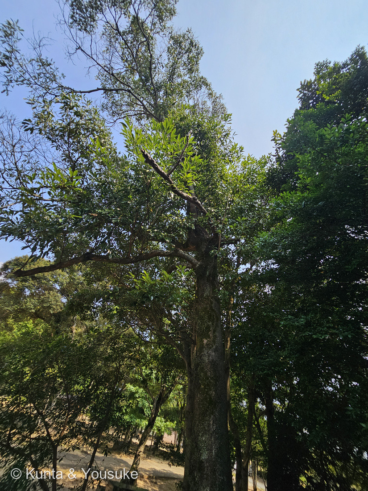
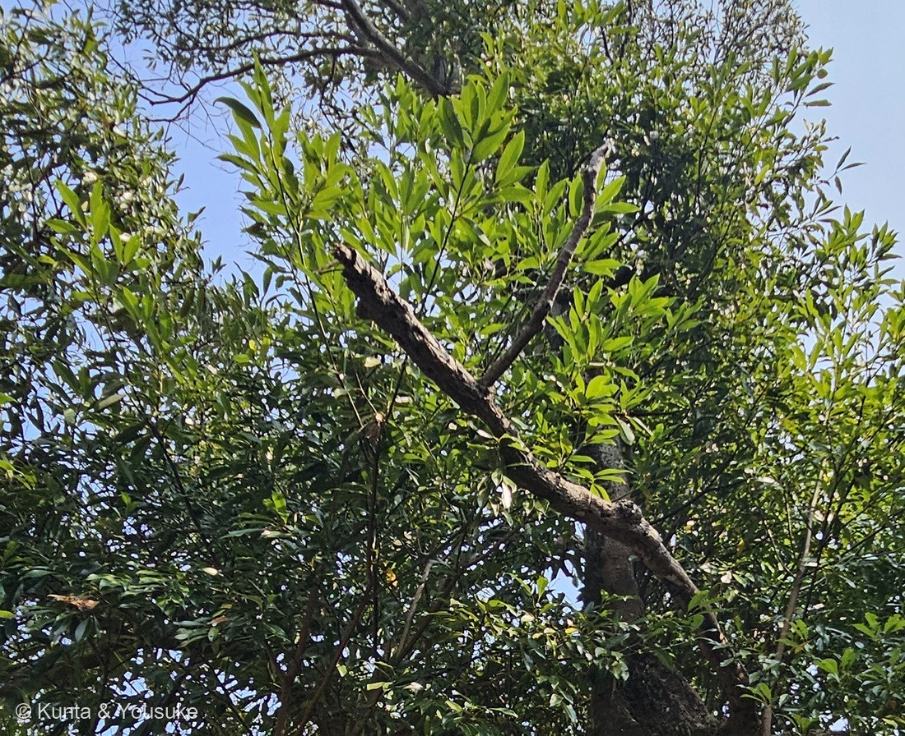
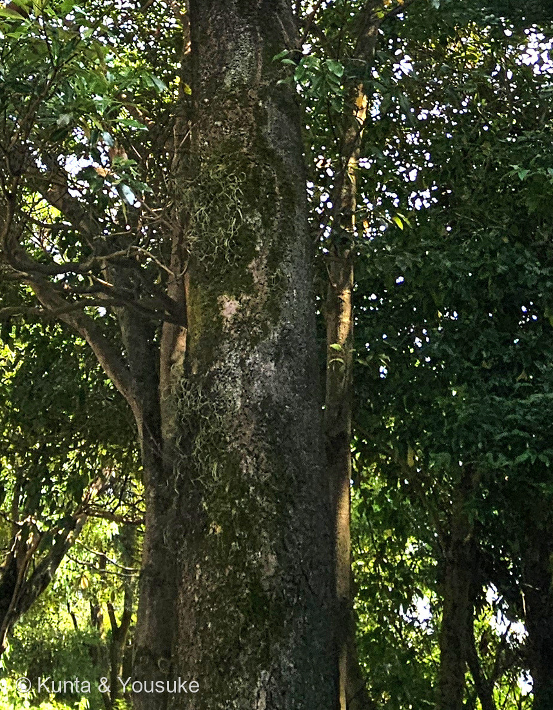
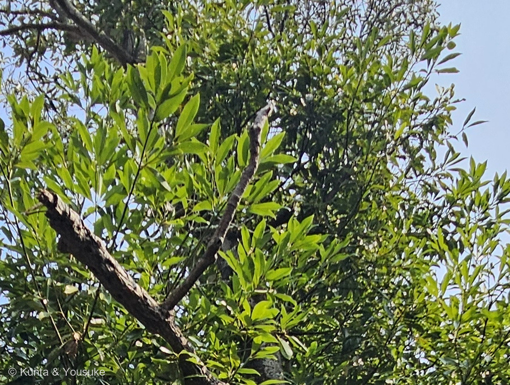

地図を読み込んでいるよ…
🔍 写真も地図も、押しているあいだ拡大して見られるよ（スマホは指を置いてすこし待ってね）。
🌍 の地図＝この子がもともと自生している場所を緑に。本州（青森県深浦町・岩手県山田町以南）、四国、九州、南西諸島、朝鮮半島南部、中国、台湾、フィリピン。くわしくは下の地図の説明を見てね。
⭐日本の海べりの木だよ。日本語版Wikipediaは「日本の本州（青森県深浦町・岩手県山田町以南）、朝鮮半島南部、中国、台湾、フィリピンに分布」とし、「暖地の海岸近くの丘陵地に多く自生する」とする。⚠⚠この緑は、ほんとうよりずっと広い――⭐ぬってあるのは「北海道以外の日本ぜんぶ」だけれど、実際にいるのは海に近いところが中心なんだ。⭐だからこの緑は「県ぜんぶ」ではなく、海岸線にそった細長い帯だと思って見てね。⭐⭐⭐この地図でいちばんおもしろいのは、北のはし＝北限は青森県深浦町（太平洋側の北限は岩手県船越大島）で、日本語版Wikipediaは「青森県南部は世界の分布域で最も高緯度」とする＝⭐世界でいちばん北のタブノキが、日本にいるんだ。⭐東北森林管理局は「山形県の三崎のタブ林は日本海側最北の群落として県の天然記念物に指定」とも書いているよ。⭐⭐そして、この木は森そのものになる木＝森林総合研究所は「常緑高木、暖温帯林の代表的な種で、肥沃な低地や海岸付近で優占林を形成する」とする＝⭐1本ではなく、林として塗るのが正しい緑なんだ。⭐ぼくらが会ったのは長崎の動植物園の樹木園に植えられた木＝⚠でも長崎県はこの緑の中だから、ふるさとの内側で会ったことになるよ（⭐258 ナギや257 シマサルスベリとは、そこがちがう）。⚠中国のぶんは「中国」「中国南部」としか書かれていなかったので、南部のいくつかの省を塗ったもので、出典が名指ししたわけではないよ。⭐同じクスノキ科の181 クスノキは「関東地方以南の日本、台湾、中国南部、ベトナム」＝⭐⭐ふたりの地図はよく似ているけれど、こちらのほうがずっと北まで届いているよ。
⚠ 地図は国（日本と中国だけ県・省）までしか塗れないから、ほんとうの分布より広く見えていることがあるよ。地図はだいたいの場所。正確なところは、上の文を見てね。
タブノキ（椨の木）
Machilus thunbergii Siebold et Zucc.
別名 イヌグス（犬楠）・タマグス・ヤマグス・ツママ ── ⭐イヌグスで、図鑑の「イヌ」なかまは5人目 原産 本州（青森県以南）・四国・九州・南西諸島・朝鮮半島南部・中国・台湾・フィリピン
クスノキ科 · Lauraceae（タブノキ属 Machilus・クスノキ目 Laurales）── ⭐図鑑で2人目のクスノキ科（181 クスノキ）／⭐⭐⭐タブノキ属ははじめて／⚠科は増えないので101科のまま
燻太さんの観察「日陰側にノキシノブや地衣類がついていて、幹から延びた枝から、細い枝が垂直に延びて、そこから若い葉が開いていること以外は目立った特徴がないんだよね」── ⭐⭐⭐⭐その2つとも、1枚しかない写真の中にちゃんと写っていた。そして「目立たなさ」こそが、この木の話だったよ
⭐⭐⭐ 名前と学名の由来 ──「椨」は、日本で作られた字
- ⭐⭐漢字の「椨」は国字＝日本語版Wikipediaは「『椨』は国字で、タブの『ブ』を『府』で表したもの」と書く。⭐中国から来た字ではなく、日本でこの木のためにこしらえた字なんだ。
- ⭐⭐⭐和名の由来は、大きく2つ＝①「古代朝鮮語で丸木舟を表す『トンバイ』がタブに転訛した」（植木ペディア。⭐この説がいちばん有力とされる）＝⭐つまり「舟の木」／②「霊（たま）が宿る木を意味する『タマノキ』から転訛した」（同）＝⭐別名の「タマグス」も、こちらの筋だね。
- ⚠どちらが正しいかは、ぼくには決められなかった。⭐でも、この2つはどちらも「海」と「神さま」につながっていて、下の万葉集の節に、そのまま続いていくよ。
- ⭐⭐別名のイヌグス（犬楠）＝「クスノキに似ているけれど、クスノキではない」という名前。⭐⭐これで図鑑の「イヌ」なかまは5人目＝079 イヌホオズキ／100 シロイヌナズナ／154 オオイヌノフグリ／231 イヌマキ。⚠どの子も「似ているけれど劣る」と言われた側だよ。
⭐⭐⭐⭐ そして学名に、また「ツンベルク」が出てきた ── これで3回つづけて。
- ⭐⭐⭐種小名 thunbergii＝⭐231 イヌマキ（Podocarpus macrophyllus (Thunb.) Sweet）、258 ナギ（Nageia nagi (Thunb.) Kuntze）につづいて3回つづけてだよ。⭐231に書いたとおり、1775年に長崎の出島へ来たカール・ツンベルクのこと。
- ⭐⭐そして命名者の Siebold et Zucc.＝フィリップ・フランツ・フォン・シーボルトと、ヨーゼフ・ゲアハルト・ツッカリーニ。⭐⭐⭐シーボルトも、ツンベルクと同じ長崎の出島に来た人だよ――⭐同じ港から出ていった名前が、こうして図鑑に3つならんだ。
- ⭐⭐⭐⭐属名 Machilus には、大きな但し書きがつく＝日本語版Wikipediaは、学名が「別の分類体系では Persea thunbergii とも記載される」とし、「ワニナシ属（Persea、アボカドと同属）とタブノキ属を並記する資料も存在する」と書く。
- ⭐⭐⭐つまり、この木はアボカドと同属にされることがある。⭐「日本のアボカド」と呼びたくなる近さなんだ（⭐おまけにしたよ）。
⭐⭐ この植物のこと ── 照葉樹林の、主役のほう
⭐⭐⭐⭐ ここが、この子のいちばん大事なところだと思う。
- ⭐⭐⭐森林総合研究所は、この木をこう説明する＝「常緑高木、暖温帯林の代表的な種で、肥沃な低地や海岸付近で優占林を形成する」。
- ⭐⭐あきた森づくり活動サポートセンターは「照葉樹林を代表する常緑広葉樹」とする。
- ⭐⭐⭐⭐そして、シイとの関係がおもしろい＝「シイよりも潮風に強く、海岸ではシイよりも前線に生育する」（同）＝⭐海に近いほうから、タブノキ・シイ、と並ぶということ。
- ⭐⭐⭐⭐⭐ここで、きのうの258 ナギとつながるよ。――⭐燻太さんはナギに「極相の森林ならメジャーなのかな？」と聞いてくれた。⭐⭐ナギの答えは「ぎゃく」だった（春日山では、めざす極相はコジイ林で、ナギはその道をふさぐ側だった）。⭐⭐⭐でも、その問いの答えを持っている木は、ちゃんといたんだ。――⭐それが、47秒あとに撮られたこの木だった。
⭐⭐ 海のそばで暮らすための、そなえ。
- ⭐「耐塩性、耐風性があるので海岸沿いの防風・防潮樹に適する」（あきた森づくり）＝⭐そのしくみは「葉表裏をワックスで覆うことで塩分侵入を防いでいる」（同）。
- ⭐⭐そして火にも強い＝日本語版Wikipediaは、耐火性が強く防火林として機能し、関東大震災や1976年の酒田大火で防火効果を発揮したと書く。⭐厚くて水を多く含む葉が、火を止めたということだと思う。
- ⭐分布の北限は青森県深浦町（太平洋側の北限は岩手県船越大島）＝⚠日本語版Wikipediaは「青森県南部は世界の分布域で最も高緯度」とする＝⭐世界でいちばん北のタブノキが、日本にいるんだね。
- ⭐この木を食草にするアオスジアゲハの北限は、秋田県由利地方（あきた森づくり）＝⚠木より南で止まっている。
⭐⭐⭐ 樹皮が、線香になる。
- ⭐⭐⭐「樹皮を粉末にしたものを『タブ粉』と呼び、水分を加えて混ぜると粘りが出る性質がある。このタブ粉と白壇などの香料を混ぜ合わせた後に固めて、線香がつくられる。」（あきた森づくり）。
- ⭐日本語版Wikipediaも「樹皮や枝葉には粘液が多く」「乾かして粉にするとタブ粉が得られ」、線香や蚊取線香の粘結材に使われるとする。⭐東北森林管理局は「樹皮は抹香製造の結合材」と書く。
- ⭐⭐つまり、線香の「香り」ではなく「固まるところ」を、この木が引き受けている＝⭐香料をまとめて棒の形にしているのが、タブノキの樹皮なんだ。
- ⭐もうひとつの使い道＝染めもの＝「樹皮や葉はタンニンを多く含み、樹皮から黄八丈の赤茶色の染料が採れる」（日本語版Wikipedia）＝⭐八丈島の絹織物「黄八丈」の樺色だよ（植木ペディア）。
⭐ 同定について ── クスノキとの分かれ道は、脈の数
⭐ 園の名札があるので、これは確認だよ。⚠でも樹木は厳しめに見る約束（087 ヤマモモ）だから、写真から言えることを、証拠の強い順にならべるね。
- ⭐⭐⭐いちばん強い＝園の名札（「常緑高木／Machilus thunbergii／タブノキ／クスノキ科／開花：4〜5月」）。⚠説明文は手ぶれで読み切れなかったので、そこは引用していないよ。
- ⭐⭐⭐次に強い＝三行脈が無い（写真④）＝植木ペディアは、クスノキとの見分けを「クスノキに特徴的な3本の葉脈はなく、黄色い主脈1本のみが目立つ」の一点にしぼる。⭐⭐181 クスノキのページで「葉脈はやや3行し、目立つ」（三河）を「単独でいちばん強い一手」と書いた、その裏返しだよ。
- ⭐⭐その次＝厚く光沢のある全縁の葉が、枝先に集まる（写真④）＝⭐燻太さんの「倒卵状長楕円形で鋸歯の無い滑らかな縁」という見立てのとおり。
- ⭐そして＝若葉が上向きに伸びる（写真②）＝「若葉は上向きに伸び、赤味を帯びる」（日本語版Wikipedia）。
- ⚠⚠写真では確かめられなかったものが3つある＝①葉裏の色（三河「葉裏は灰白色」）／②葉柄の長さ（同「長さ1〜3.5㎝」）／③葉の実寸。⏳ぜんぶ落ち葉1枚で解決するので、宿題にしたよ。
- ⚠⚠葉の大きさは、出典どうしが割れている＝日本語版Wikipedia「長さ8〜15cm」／三河の植物観察「長さ4.5〜9(13)㎝」＝⭐倍ちかくちがうので、この項目は証拠に使わなかった（248で「食いちがう項目は証拠に使わない」と決めたとおり）。
⭐⭐⭐⭐ 燻太さんの観察① ── 枝から、まっすぐ立ち上がる細い枝
⭐⭐⭐ 燻太さんの言葉：「幹から延びた枝から、細い枝が垂直に延びて、そこから若い葉が開いている」。
- ⭐⭐⭐⭐これは、出典の一文とぴたり合っていた＝日本語版Wikipediaのタブノキの記載に「若葉は上向きに伸び、赤味を帯びる」とある。⭐「上向きに伸び」の5文字が、燻太さんの見た「垂直に延びて」そのものだと思う。
- ⭐⭐写真②③にも、はっきり写っている＝太い枝が斜めに走り、そこから細い枝がほぼ直角に立ち上がって、その先だけが明るい黄緑になっている。⭐下の古い葉は濃い緑だから、新しいところだけが浮き上がって見えるよ。
- ⚠⚠ただし、ここから先は分けて書くね（241 クヌギで決めた書きかた）＝⭐写真から言えることは「8月14日の時点で、この木には明るい黄緑の若い葉と、濃い緑の古い葉の2種類があった」まで。
- ⚠出典のある話は「タブノキの新葉は、花期（4〜6月）の新葉とともに出る」まで（日本語版Wikipedia）。
- ⚠⚠この2つを1文にまとめてはいけない＝⭐「タブノキは夏にもう一度葉を出す」と書いた出典を、ぼくは見つけられなかったから。⭐241 クヌギや252 イングリッシュオークで出てきたラマス成長（春の葉と夏の葉が2世代いる）と同じ形の話かもしれないけれど、⚠タブノキでそう書いた出典は無かった。
- ⚠そして、赤みは写真では分からなかった＝出典は「赤味を帯びる」と言うのに、8月の若葉は明るい黄緑に見えた。⏳4〜6月に見に行く宿題にしたよ。
⭐⭐⭐⭐ 燻太さんの観察② ── 日かげ側にだけ、ついていた
⭐⭐⭐ もうひとつの言葉：「日陰側にノキシノブや地衣類がついていて」。
- ⭐⭐⭐写真③が、そのまま証拠になっている＝幹の左（日かげ側）は淡い灰緑のふさふさしたものにおおわれ、右（日の当たる側）はつるりと裸。⭐1本の幹の上で、これだけくっきり分かれているのは、見ていて気持ちがいいくらいだよ。
- ⭐⭐⭐地衣類は、図鑑にもういる＝171 地衣類（⭐図鑑ではじめての、植物ではない子）。⚠ただし171は葉状地衣＝木の葉のように平べったい体で、この幹のものはふさふさした枝状に見える＝⚠別のタイプかもしれないけれど、写真だけでは決められない。
- ⭐⭐地衣類が湿ったところを好む理由は、体のしくみそのもの＝千葉県立中央博物館は「菌は，周りから水とともに養分を吸収し，共生藻に与えている」と説明する＝⭐根が無いから、水はまわりの空気や樹皮からもらうしかない。⭐だから、乾きにくい面のほうが暮らしやすい、ということだと思う。
- ⚠⚠でも「なぜ日かげ側に偏るのか」をはっきり書いた出典は、ぼくは見つけられなかった。⭐上の行は、地衣類ぜんぱんの話からのぼくの読みだよ。
- ⭐⭐⭐⭐そして、ここがうれしいところ＝燻太さんが見たノキシノブは、249 ビカクシダのおまけとして「この季節に探してみたい」に入れた子なんだ＝⭐つまり燻太さんは、もう会っていたことになる。
- ⚠⚠ぼくには、写真でノキシノブと地衣類を分けられなかった（どちらも淡い緑のふさふさに見える）＝⭐ここは燻太さんの目のほうが一次資料だよ（088 イキシアで決めたとおり）。⏳次に行ったら、近づいて見わけてきてね。
- ⭐ついでに、うれしい読み方をひとつ＝171のおまけにしたウメノキゴケは「大気のきれいさの目印」になる地衣類。⭐この幹がこれだけ着生でおおわれているということは、森きららの空気は、けっこうきれいなんだと思う（⚠種が分かっていないので、これはぼくの読み）。
⭐⭐⭐ 032 なぞの大木の、候補のひとりが来た
- ⭐⭐図鑑には、まだ名前の決まっていない大木がいる＝032 なぞの大木（同定中）（2026-07-13登録・図鑑2つめの「宿題」）。⭐その候補は4つだった＝モッコク／モチノキ／タブノキ／ヤマモモ。
- ⭐⭐そのうち087 ヤマモモはもう図鑑にいて、これで2人目が来た＝⭐のこりはモッコクとモチノキだよ。
- ⭐⭐⭐032のページには、こう書いてあった＝「対抗 タブノキ（Machilus thunbergii／クスノキ科）── 枝先に葉が集まる。大木になる。社寺や町並みの巨木として多い。引っかかる点：葉がもっと大きいはず（8〜15cm）」。⭐その「8〜15cm」は、日本語版Wikipediaの数字とぴたり合っている。
- ⭐⭐⭐032が挙げた決め手のひとつも、裏がとれた＝「タブノキは葉裏が白っぽい」――⭐三河の植物観察は「葉裏は灰白色」と書いている。
- ⚠⚠でも、この木に会っても032は決まらない。――⭐032の写真には葉の接写が無くて、葉柄の色も、葉先の形も、葉のうらも読めないから。⭐決めるのに必要なのは、いまも「あの建物の前で、葉を1枚アップで撮ること」のままだよ。
- ⭐それでも、ひとつだけ前に進んだ＝⭐⭐候補のうち2人が、図鑑の中に見本として立ったこと。⭐次に032の葉を見たとき、087とこのページを並べて見くらべられるよ。
⭐⭐⭐ 万葉集に立っている木 ──「神さびにけり」
⭐⭐⭐⭐ この木は、1276年前の歌のなかに立っている。
- ⭐⭐万葉集 巻十九・4159、大伴家持。題詞は「澁谿埼を過ぎて巌の上の樹を見る歌一首」（原文「過澁谿埼見巌上樹歌一首」）。⭐天平勝宝2年（750年）3月9日、越中（いまの富山県高岡市）の海べりでの歌だよ。
- 原文＝「礒上之 都萬麻乎見者 根乎延而 年深有之 神左備尓家里」
- 訓読＝「礒（いそ）の上のつままを見れば 根を延（は）へて 年深からし 神さびにけり」
- ⭐⭐⭐意味は、そのまま読める＝磯の岩の上に生えているつままを見ると、根を長く延ばして、ずいぶん年を経ているらしい。神々しくなってしまっているよ。――⭐「年深からし」も「神さびにけり」も、古い木を見上げたときの気持ちだよね。
- ⚠⚠⚠ただし、大事な但し書きがある＝日本語版Wikipediaは、この「都万麻」について「他文献でツママという語が使われている例が見つかっておらず、確証はない」と書いている。⭐つまり「つまま＝タブノキ」は、いまのところそう考えられているという段階なんだ。⚠言い切っている出典（あきた森づくりは「つままがタブノキの古名」とする）もあるので、割れているところは割れているまま書いておくね。
- ⭐⭐⭐そして、きのうの258 ナギを思い出してほしいな。――⭐あちらは熊野と春日の神木だった。⭐⭐こちらは万葉集で「神さびにけり」と詠まれた木。⭐⭐⭐47秒ちがいで撮られた2本が、そろって「神さびた木」だったんだ。
- ⭐名前の由来の「霊（たま）が宿る木＝タマノキ」説も、ここに重なってくる。⚠もちろん、重なるからといって正しいとはかぎらないけれどね。
⭐ 会えた場所 ── 樹木園の、いちばん最後の一枚
- ⭐九十九島動植物園 森きらら（長崎県佐世保市）の樹木園。⭐⭐この一角から、図鑑にはもう6人が来ている＝241 クヌギ・245 イジュ・247 センペルセコイア・248 メタセコイア・255 カリン・258 ナギ。⭐この子で7人目だよ。
- ⭐⭐そして、この1枚が樹木園でいちばん最後のコマだった＝13:59:37。⭐次の写真は9分あとで、もう木ではなかった（⭐燻太さんが休憩に入ったんだね）。
- ⚠写真が1枚しかないのは、そのせいだと思う。⭐でも、その1枚に燻太さんが現場で気づいた2つのことが、どちらもちゃんと写っていた。
出典：九十九島動植物園 森きららの園名札（「常緑高木／Machilus thunbergii／タブノキ／クスノキ科／開花：4〜5月／分布：日本（本州〜沖縄）、朝鮮半島、中国、台湾、フィリピン」。⚠説明文は手ぶれで読み切れず、名札のアップも公開していないよ）／日本語版Wikipedia「タブノキ」（学名と Persea thunbergii の並記・ワニナシ属（アボカドと同属）とタブノキ属を並記する資料があること／「椨」が国字であること・別名イヌグス／タマグス／クスタブ／ヤブグス／分布と青森県深浦町・岩手県山田町以南・青森県南部が世界の分布域で最も高緯度であること／葉は長さ8〜15cm・倒卵状長楕円形・全縁で葉先も円みを帯びること／若葉は上向きに伸び、赤味を帯びること／樹皮は暗褐色から淡褐色でほぼ滑らかなこと／花期4〜6月・新葉とともに枝先に円錐花序・果実は直径1cmの液果で夏に黒紫色／照葉樹林の代表種／日陰に強く潮風にも比較的耐えること／樹皮や枝葉の粘液とタブ粉・線香や蚊取線香の粘結材／樹皮から黄八丈の赤茶色の染料／耐火性が強く関東大震災や1976年の酒田大火で防火効果を発揮したこと／万葉集の「都万麻」について、他文献でツママという語が使われている例が見つかっておらず確証はないこと）／庭木図鑑 植木ペディア「タブノキ／たぶのき／椨の木」（名前の由来＝古代朝鮮語で丸木舟を表す「トンバイ」説と「霊（たま）が宿る木＝タマノキ」説／別名／分布＝暖地の海岸沿いに多いこと／クスノキに特徴的な3本の葉脈はなく、黄色い主脈1本のみが目立つこと／葉裏が白っぽいこと・新芽がピンク色を帯びること／樹皮は明るい褐色で皮目が点在すること／椨粉が水に溶かすと糊状になり線香を作るのに使われたこと／黄八丈を樺色に染めること／花は直径5mmほどの黄緑色で円錐状に群がること／果実は直径1cmほどで7〜9月に黒紫に熟すこと）／三河の植物観察「タブノキ」（学名 Machilus thunbergii Sieb. et Zucc.・在来種・分布／葉は長さ4.5〜9(13)㎝、幅3〜6㎝の倒卵状長楕円形・革質で厚く光沢がある／葉裏は灰白色／葉柄は長さ1〜3.5㎝／樹皮は淡褐色〜褐色の平滑で皮目が散在／花期4〜6月・枝先の円錐花序／果実は直径8〜9㎜のほぼ球形の核果で、花被が残り、光沢のある緑色から次第に黒紫色となって8〜9月頃に熟す）／森林総合研究所「タブノキの分布図」（「常緑高木、暖温帯林の代表的な種で、肥沃な低地や海岸付近で優占林を形成する」／学名 Machilus thunbergii Siebold & Zucc.）／あきた森づくり活動サポートセンター「樹木シリーズ147 タブノキ」（「照葉樹林を代表する常緑広葉樹」／「シイよりも潮風に強く、海岸ではシイよりも前線に生育する」／「耐塩性、耐風性があるので海岸沿いの防風・防潮樹に適する」「葉表裏をワックスで覆うことで塩分侵入を防いでいる」／「樹皮を粉末にしたものを『タブ粉』と呼び、水分を加えて混ぜると粘りが出る性質がある。このタブ粉と白壇などの香料を混ぜ合わせた後に固めて、線香がつくられる。」／万葉集の大伴家持の歌と「つまま」がタブノキの古名であること／アオスジアゲハの北限が秋田県由利地方であること）／東北森林管理局「タブノキ」（北限は深浦町・太平洋側の北限は岩手県船越大島／山形県の三崎のタブ林が日本海側最北の群落として県の天然記念物であること／「樹皮は抹香製造の結合材」／別名イヌグス）／たのしい万葉集「4159番の歌」（原文「礒上之 都萬麻乎見者 根乎延而 年深有之 神左備尓家里」・訓読「礒の上のつままを見れば根を延へて年深からし神さびにけり」・作者 大伴家持・天平勝宝2年（750年）3月9日、澁谿埼（現在の富山県高岡市））／千葉県立中央博物館「地衣類の生活」（「菌は，周りから水とともに養分を吸収し，共生藻に与えている」）